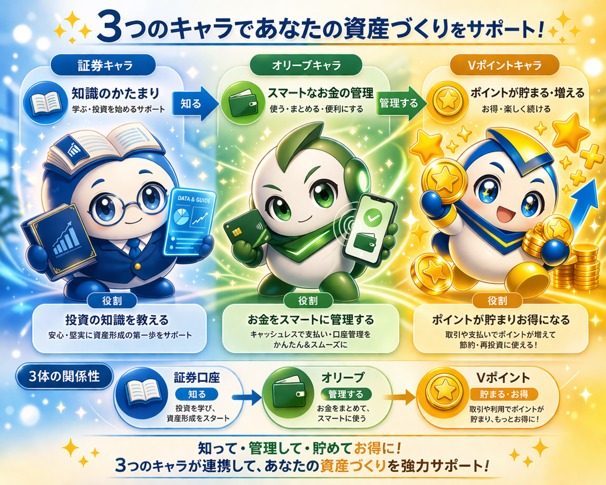
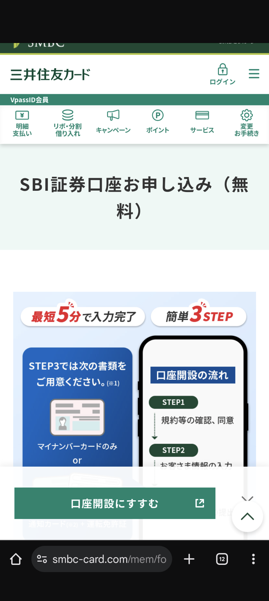
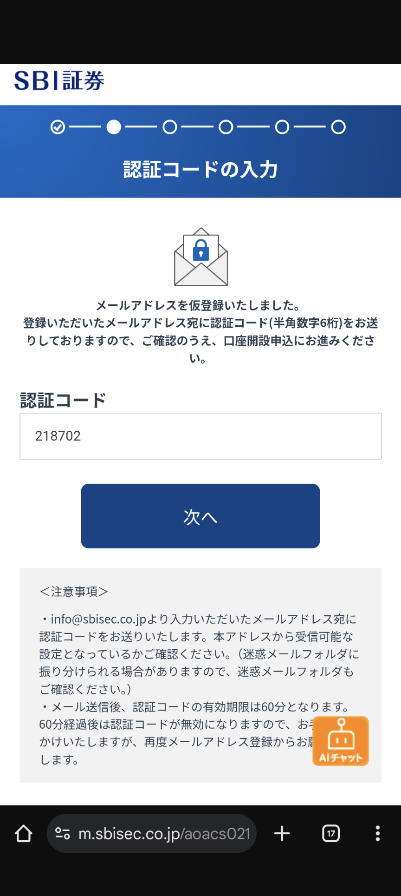
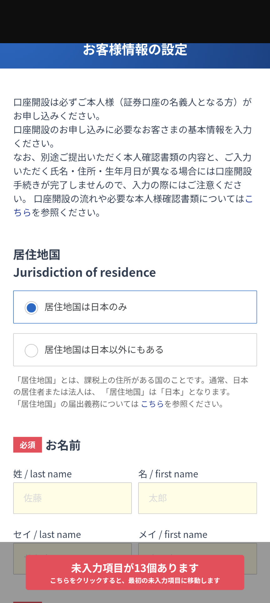
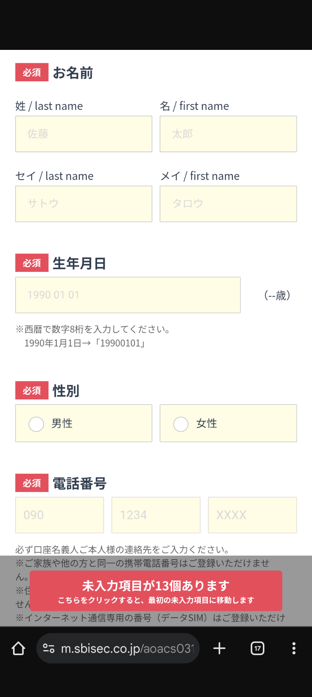
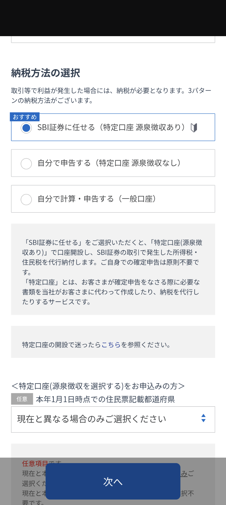
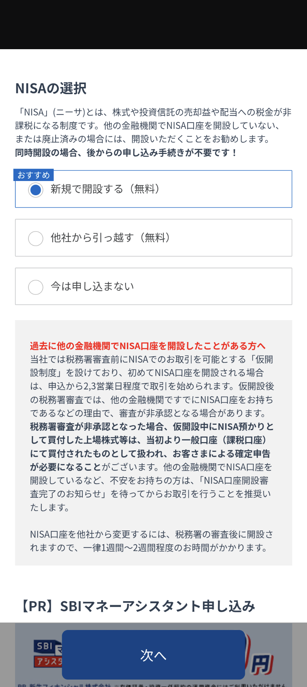
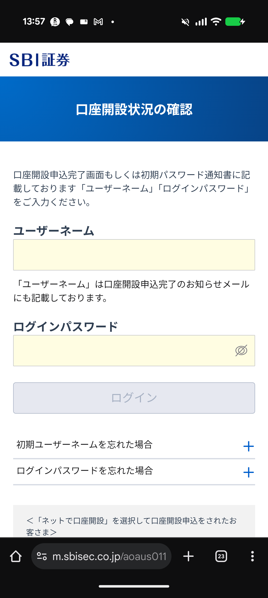
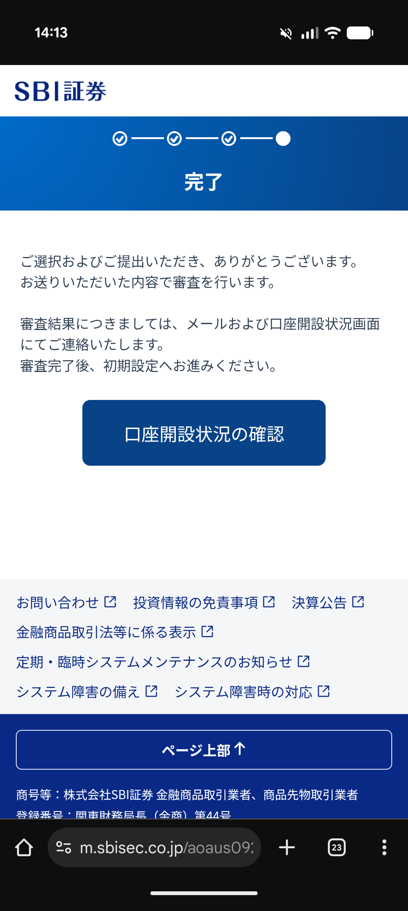
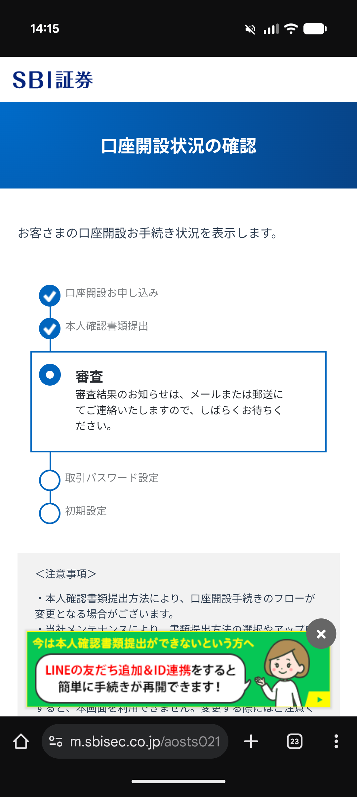

Goal
新NISAを満額にして、ほっとく。
それだけで、10年後が変わる。
それだけで、10年後が変わる。
運用益はすべて非課税。複利で増え続ける。
難しくない。怖くない。ただ、始めるだけでいい。
難しくない。怖くない。ただ、始めるだけでいい。
STEP 1
SBI証券で口座開設
▶
STEP 2
オリーブ連携でVポイント設定
▶
GOAL
毎月自動積立あとはほっとく
📌 このページではSTEP 1「SBI証券の口座開設」を完了させます。
💡 なぜ「SBI証券 × 三井住友 × OLIVE × Vポイント」を推すのか

運営者より
FXで数百万円を失った私が、今これを選んでいる理由はシンプルです。「非課税・ポイント還元・手数料ゼロ」が全部揃っている組み合わせが、これだけだったからです。難しい話は抜きにして、この4つをセットで使うのが今の日本で最も合理的な選択だと思っています。
FXで数百万円を失った私が、今これを選んでいる理由はシンプルです。「非課税・ポイント還元・手数料ゼロ」が全部揃っている組み合わせが、これだけだったからです。難しい話は抜きにして、この4つをセットで使うのが今の日本で最も合理的な選択だと思っています。

証券くん
👉 まず最初にやること
「ぼくのところで新NISAの口座を開くのが最初のステップだよ。手数料・運用コストは業界最低水準。まずはここから始めよう！」
📌 このページでやること：SBI証券の口座開設のみ
OLIVE・Vポイントの設定は、口座開設が完了した後の次のステップで解説します。まず口座開設だけ完了させましょう。
OLIVE・Vポイントの設定は、口座開設が完了した後の次のステップで解説します。まず口座開設だけ完了させましょう。
オリーブちゃん
⏭ 口座開設後・次のステップ
「私は三井住友の総合口座。SBI証券との連携でクレカ積立を設定すると、毎月Vポイントが貯まるしくみが完成するよ。口座開設が終わったら、次は私の出番！」

Vポイントくん
⏭ OLIVE設定後・最終ステップ
「積立するだけで僕が貯まって、そのままSBI証券で投資に使えるよ。OLIVEの設定が終わったら、あとは放置でOK。お楽しみに！」

※当サイトに登場するキャラクターは、当サイトが独自に制作したイメージキャラクターです。
各金融機関・サービスの公式キャラクターおよび公式見解とは一切関係ありません。
各金融機関・サービスの公式キャラクターおよび公式見解とは一切関係ありません。
▶ お金が増えるサイクル
毎月の積立
▶
Vポイント還元
▶
ポイントも投資へ
▶
複利で増える
しかも、すべての運用益が非課税。これが「ほっとけ投資」の完成形です。
▸ 全体の流れ（STEP 0〜6）
0
申込
開始
開始
1
メール
認証
認証
2
個人情報
入力
入力
3
特定口座
選択
選択
4
NISA
選択
選択
5
申込
完了
完了
6
審査待ち
確認
確認
⚠️ STEP 3「特定口座の選択」は間違えやすい重要ポイント。注意してください。
さあ、スマホで始めましょう
口座開設は無料・スマホがあれば20〜30分で申込完了します。
📱 スマホを推奨する理由
- ✅マイナンバーカードをその場で撮影できる → 最短翌営業日から取引開始
- ⏳PCの場合は書類を郵送する必要があり、審査完了まで1〜2週間かかる場合があります
📱 スマホで読み取ってそのまま開始
── PCでアクセスする方はこちら ──
🖥 SBI証券で口座開設を始める（無料）
※リンク先はSBI証券公式サイトです。
💡 このページをブックマークしてから始めると、手順を見ながら進められます。
📱 SBI証券を別タブで開いて申込を始める
↑ タップするとSBI証券が別タブで開きます。このページは開いたままにしておけます。
📌 SBI証券のサイトが開いたら、下の赤い「口座開設」ボタンをクリックして申込を進めてください。
口座開設
口座開設の流れ ›
※公式サイトのボタンイメージ
🔴 要注意！読み飛ばさないでください
⚠️ 偽サイト・フィッシング詐欺にご注意ください
- ・SBI証券を装った偽メール・偽サイトの被害が報告されています。
- ・公式URLは https://www.sbisec.co.jp です。アクセス前にURLを必ずご確認ください。
- ・不審なメールのリンクからではなく、このページのボタンまたはQRコードからアクセスすることをおすすめします。
このページの使い方
💻 PC・タブレット
まず流れを確認する用
このガイドを読む用に使います。全体の流れを確認してから作業を始めましょう。
📱 スマホ（推奨）
実際の登録作業はこちら
実際の口座開設作業はスマホで行います。マイナンバーカードをその場で撮影できます。
💡 PCでこのページを見ながら、スマホで操作する「2画面スタイル」もおすすめです。
📱 ここからの操作はスマホで進めましょう
STEP 0
申込を開始する
▾
SBI証券の口座開設ページにアクセスして、申込ボタンを押します。

申込開始画面（三井住友カード経由の場合）
- 三井住友カードをお持ちの方は、カードの会員ページからSBI証券の口座開設ができます。
- Vポイントが貯まるクレカ積立を設定したい方は、この方法が便利です。
- 「口座開設にすすむ」ボタンをタップして申込を開始します。
画面のデザインは変更される場合があります。「口座開設」「申込む」という言葉を探してください。
⚠️
SBI証券の公式URL（www.sbisec.co.jp）を直接入力するか、信頼できるリンクからアクセスしてください。検索広告からのアクセスは偽サイトに誘導される危険があります。
事前に手元に用意するもの
| 必要なもの | 補足 |
|---|---|
| マイナンバーカード（必須） | プラスチック製のカード。表・裏の両面が必要です。「通知カード（紙のみ）」は使用不可。 |
| メールアドレス（必須） | GmailなどのフリーメールでOK。 |
| スマートフォン（必須） | カメラ機能が使えることを確認してください。 |
| 銀行口座（後で使用） | 入出金の紐付けに使います。通帳やキャッシュカードで口座番号を確認してください。 |
STEP 1
メールアドレスを認証する
▾
メールアドレスを登録し、届いた認証コードを入力します。

認証コードの入力画面
- メールアドレスを登録すると、SBI証券から6桁の認証コードがメールで届きます。
- 届いた数字を「認証コード」欄に入力して「次へ」をタップします。
- 認証コードの有効期限は60分です。時間内に入力してください。
画面のデザインは変更される場合があります。「認証コード」や「確認コード」という言葉を探してください。
⚠️
メールが届かない場合は、迷惑メールフォルダをご確認ください。送信元は
[email protected] です。💡
GmailやYahooメールなど、普段よく使っているメールアドレスを登録するのがおすすめです。
STEP 2
個人情報を入力する
▾
氏名・住所・生年月日・電話番号などを入力します。画面の案内に従って順番に進めてください。

居住地国・お名前の入力（前半）
- 「居住地国は日本のみ」を選択します（日本在住の方はこちら）。
- お名前は漢字とカタカナ（フリガナ）の両方を入力します。
画面のデザインは変更される場合があります。

生年月日・性別・電話番号の入力（後半）
- 生年月日は西暦8桁で入力します。例：1960年1月1日 →
19600101 - 電話番号はご本人の連絡先を入力してください（ご家族の番号は不可）。
画面のデザインは変更される場合があります。
⚠️
住所は住民票に記載された表記と一致させてください。「1-2-3」と「1丁目2番3号」のような表記ゆれが原因で審査が差し戻されることがあります。
ℹ️
画面下部に「未入力項目がN個あります」というバナーが表示されます。そこをタップすると、まだ入力していない項目に素早く移動できます。
⭐ STEP 3 最重要
特定口座の種類を選ぶ
▾
🔴
「SBI証券に任せる（特定口座 源泉徴収あり）」を選んでください。
これを選ぶと、税金の計算・納付をSBI証券が自動でやってくれます。確定申告（※）が原則不要になります。
※確定申告：1年間の収入・税金を自分で計算して税務署に申告する手続き
これを選ぶと、税金の計算・納付をSBI証券が自動でやってくれます。確定申告（※）が原則不要になります。
※確定申告：1年間の収入・税金を自分で計算して税務署に申告する手続き

納税方法の選択画面
ここをチェック！
- 画面に3つの選択肢があります。
- 一番上の「SBI証券に任せる（特定口座 源泉徴収あり）」に「おすすめ」と表示されています。
- この選択肢が選ばれている（青丸になっている）ことを確認して「次へ」をタップします。
画面のデザインは変更される場合があります。「SBI証券に任せる」「源泉徴収あり」という言葉を確認して選択してください。
3つの選択肢の違い
| 選択肢 | 確定申告 | 初心者向き |
|---|---|---|
| SBI証券に任せる（源泉徴収あり）おすすめ | 不要 | ◎ |
| 自分で申告する（源泉徴収なし） | 必要な場合あり | △ |
| 自分で計算・申告する（一般口座） | 毎年必要 | ✕ |
⚠️
「一般口座」を選ぶと、毎年自分で税金の計算・申告が必要になります。後から変更もできますが手間がかかります。最初から「源泉徴収あり」を選びましょう。
STEP 4
NISA口座を選択する
▾
NISA口座を同時に開設するかどうかを選びます。初めての方は「新規で開設する（無料）」を選びましょう。

NISAの選択画面
- 「おすすめ」と表示された「新規で開設する（無料）」を選びます。
- 他の銀行・証券会社にすでにNISA口座がある方は「他社から引っ越す」を選択してください。
- 選択したら「次へ」をタップします。
画面のデザインは変更される場合があります。「新規で開設する」「NISA」という言葉を確認して選択してください。
ℹ️
NISA口座とは、運用で得た利益に税金がかからない専用の口座です（通常は利益の約20%が税金）。証券口座と同時に申込むと、後から手続きをする手間が省けます。
⚠️
NISA口座は同じ年に1つの金融機関にしか持てません。他の銀行や証券会社にすでに開設している場合、二重に開設することはできません。
STEP 5
申込を完了する
▾
入力内容を確認し、マイナンバーカードを撮影してアップロードします。送信すれば申込完了です。

口座開設状況の確認（申込完了後）
- 申込完了後、この「口座開設状況の確認」画面が表示されます。
- ユーザーネームとログインパスワードが発行されます。必ず控えてください。
画面のデザインは変更される場合があります。

申込完了画面
- 「完了」と表示されれば、申込は無事に送信されました。
- 審査結果はメールと郵送（ハガキ）でご連絡があります。
- 「口座開設状況の確認」ボタンから審査の進捗を確認できます。
画面のデザインは変更される場合があります。
⚠️
マイナンバーカードの撮影は、明るい場所で文字がはっきり読めるよう撮影してください。写真がぼけていると再提出を求められます。
⚠️
「通知カード（薄い紙のカード）」ではなく、プラスチック製のマイナンバーカードが必要です。
STEP 6
審査を待つ〜口座開設状況を確認する
▾
申込が完了したら審査が始まります。審査結果を待ちながら、進捗を確認しましょう。

口座開設状況の確認画面（審査中）
- 「口座開設お申し込み」「本人確認書類提出」にチェックが入り、現在「審査」中であることが確認できます。
- 審査には通常数日〜1週間程度かかります。
- 審査完了後、「取引パスワード設定」「初期設定」と進んでいきます。
画面のデザインは変更される場合があります。
ℹ️
審査が完了すると、メールとハガキ（郵便）でご連絡があります。ハガキにはログインIDと初期パスワードが記載されています。
✅
審査中でも、積立投資の設定を先に予約しておくことができます。審査が通ったあと、自動的に積立が始まります。
さあ、今日から始めましょう
口座開設は無料・スマホがあれば20〜30分で申込完了します。
まずこのガイドをひと通り確認してから、スマホで始めてみてください。
📱 スマホを推奨する理由
- ✅マイナンバーカードをその場で撮影できる → 最短翌営業日から取引開始
- ⏳PCの場合は書類を郵送する必要があり、審査完了まで1〜2週間かかる場合があります
📱 スマホで読み取ってそのまま開始
── PCでアクセスする方はこちら ──
🖥 SBI証券で口座開設を始める（無料）
不安な方は、このページを印刷して手元に置いてから始めてみてください。
💡 このページをブックマークしてから始めると、手順を見ながら進められます。
📱 SBI証券を別タブで開いて申込を始める
↑ タップするとSBI証券が別タブで開きます。このページは開いたままにしておけます。
📌 SBI証券のサイトが開いたら、下の赤い「口座開設」ボタンをクリックして申込を進めてください。
口座開設
口座開設の流れ ›
※公式サイトのボタンイメージ
🔴 要注意！読み飛ばさないでください
⚠️ 偽サイト・フィッシング詐欺にご注意ください
- ・SBI証券を装った偽メール・偽サイトの被害が報告されています。
- ・公式URLは https://www.sbisec.co.jp です。アクセス前にURLを必ずご確認ください。
- ・不審なメールのリンクからではなく、このページのボタンまたはQRコードからアクセスすることをおすすめします。